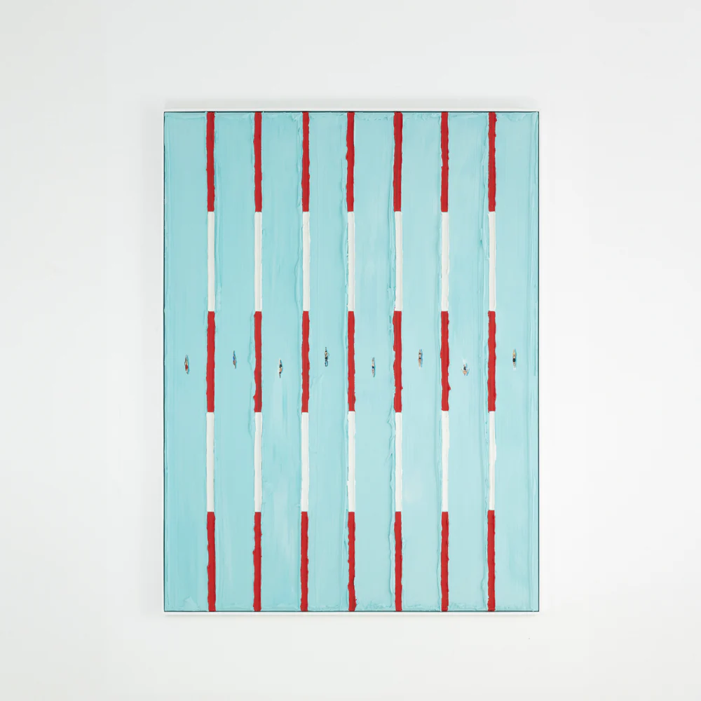

Artist One
Werner Bronkhorst
Werner Bronkhorst is featured because of his distinctive visual language and the way his work immediately stands out. From a collector's perspective, that kind of recognizability matters because it can help an artist build stronger long-term attention.
His work fits the type of painter this site wants to highlight: memorable, visually strong, and increasingly appealing to a broader audience.